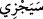
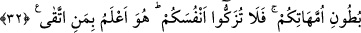

sâhibi olmasının bir neticesi olduğunu gösterir.
Sana kalp lazımsa dikkatli ol,
Çünkü her işin ardından karşına bir şey çıkar.
“Güzel davrananları da daha güzeliyle mükâfâtlandırması içindir.” Hidâyet yoluna
gidenleri de güzellikle, güzel karşılık olan cennetle mükâfâtlandırsın. “Hüsnâ” kelimesi
mutlak bir ziyadeyi ifâde için getirilmiş olup başındaki “bâ” harf-i cerri (
) fiilini
geçişli yapmak için veya “güzel amelleri sebebiyle” mânâsını takdir etmek amacıyla
kullanılmıştır. Bu durumda “bâ” harf-i cerri sebebiye ve mukabele anlamları taşır.
32. Ufak tefek kusurları dışında, büyük günahlardan ve edepsizliklerden
kaçınanlara gelince, bil ki Rabbin, affı bol olandır. O, sizi daha topraktan yarattığı
zaman ve siz annelerinizin karınlarında bulunduğunuz sırada (bile), sizi en iyi
bilendir. Bunun için kendinizi temize çıkarmayın. Çünkü O, kötülükten sakınanı
daha iyi bilir.
“Ufak tefek kusurları dışında, büyük günahlardan ve edepsizliklerden kaçınanlara
gelince, …” ifâdesiyle başlayan cümle, bir önceki âyette geçen“güzel davrananlar”
cümlesinin ya sıfatı ya da ondan bedeldir. Fakat Sa’dî Müftî “ellezîne” ile başlayan bu
sıla cümlesinin önceki cümleye bağlantılı olduğunu, ancak cümlenin i’râb itibariyle
metruk hükmünde olmasının daha güzel olacağını beyân etmektedir. Çünkü ona göre
şâyet âyetin tertîbi tersine olsaydı, o zaman onun sadece bir i’râb şekli olabilirdi.
Fakir [Bursevî] der ki: Tahliye anlamındaki “ictinâb” kelimesi cümlenin en başına
getirilmiş olduğu için önceki âyetle irtibatı sağlanmıştır. (
) ile başlayan ifâdenin, bir
önceki cümlenin sıfatı veya bedeli olmayışı, istikbal sîgasıyla gelmiş olmasından
anlaşılmakta ve bu sîga aynı zamanda ictinâbın yenilendiğine ve devamlı oluşuna da
delâlet etmektedir. Yâni istikbal sîgasının getiriliş sebebi haram kılınanları irtikâb
etmek veya farz kılınanları terk etmek aynı derecede olmak üzere, ma’siyeti terkin,
müminin dâimî olarak üzerinde bulunması gereken bir hal olduğu ve en güzel karşılığa
hak kazanması için büyük günahlardan da kaçınmayı bir alışkanlık ve âdet hâline
getirmesinin gerekliliğinin vurgulanması içindir. Zira her kim bir defasında büyük
günahlardan kaçsa da diğer zamanlarda onun içine dalabilir ve nâfile ibâdetlerdekinin
aksine bu kaçışın sevabını hak etmeyebilir. Ancak her kim bir kez de olsa nâfile ibâdet